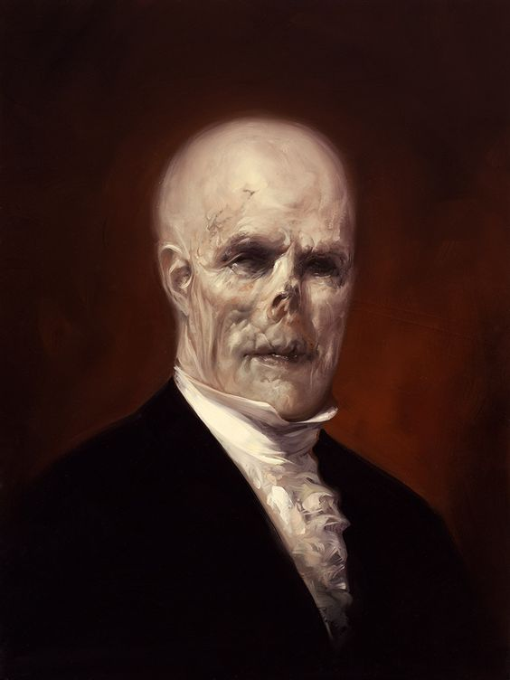
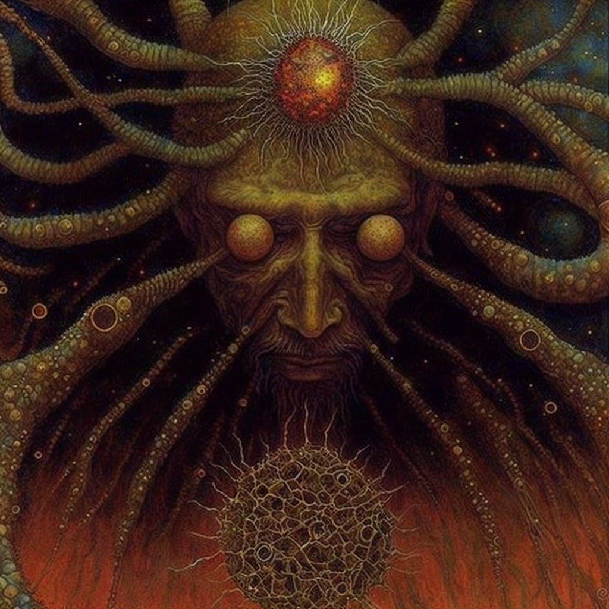
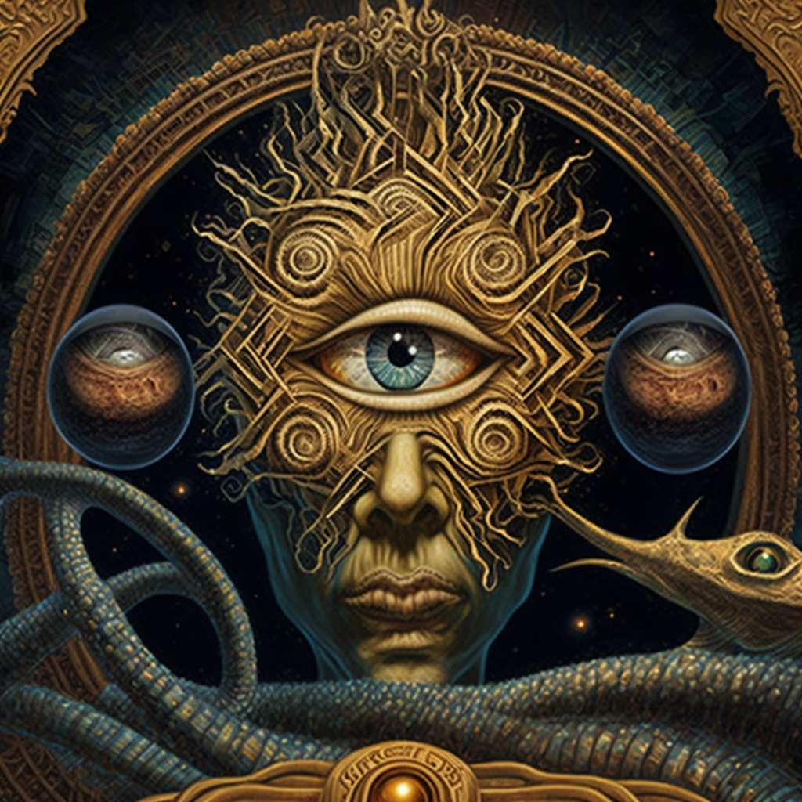
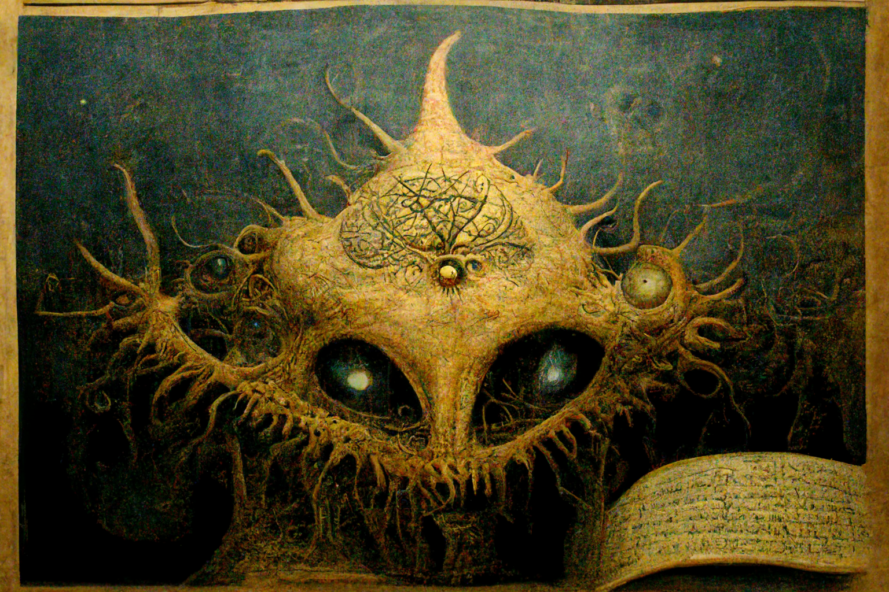
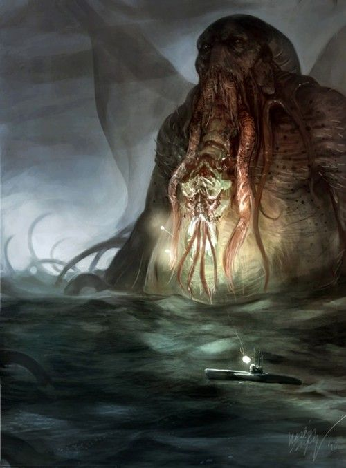
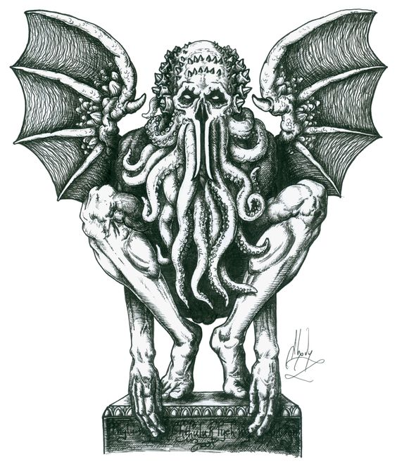
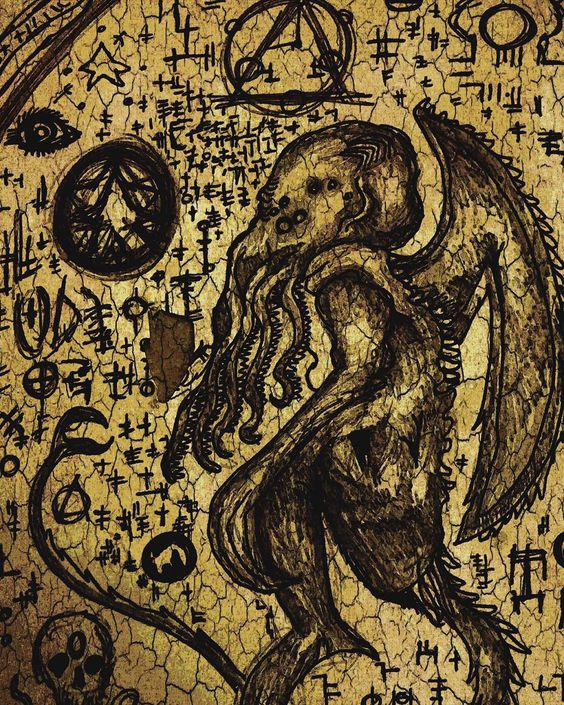
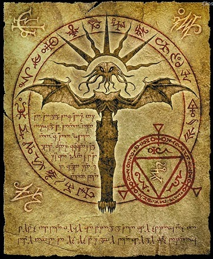
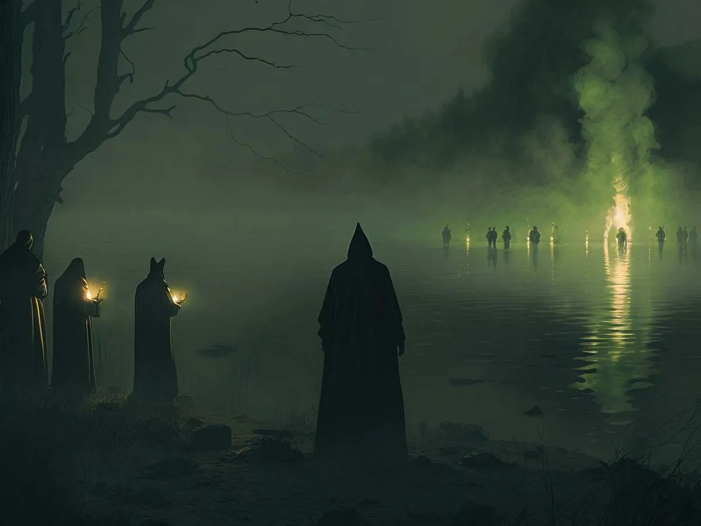
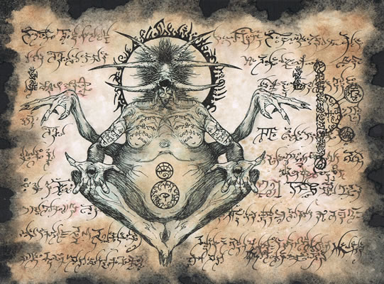

In my many adventures to find the truth I found an old mansion in a small
town in France, it was so old that no matter who I asked no one knew
when was it built or who owned it. After a lot of thinking(it was like 10
seconds) I decided the best thing to do is to break inside the mansion
and see what it has to offer. The mansion itself was pretty boring but I did
find there a weird book that talks about some kind of an ancient
cult
,this
was the first time I ever heard about the cult of Cthulhu.
The cult is very ancient, so ancient in fact that I am pretty sure it existed

even before the earth was created. But, the cult is not only ancient but
also very global, in my research I found at least 10 bases they have in the
countries: Iceland, China, France, Romania, Lebanon, Morocco, Kenya,
Angola, chile, and the USA. Not only this but I estimate that they have
at least 120 million members, most of them from the lower class, people
who have been left to die by the world but some members are people
a lot of power and influence over the world. You can find
with a list of them here.
The Great Old Ones

The cult is very secret, and no matter how much I tried I couldn't find a
way to join them but I did find a person named "Ziv" who was a member
of the cult. I will not tell you what I did to him to make him speak or
how did I found him but I will tell you about some of the interesting
things he told me about them.
The creators of the cult were a group of gods named the Great Old Ones.
They came from another universe, the reason why they came to our
universe is unknown even for the cult. Maybe their universe was
destroyed or maybe they had to run from something, but no matter what
happened the result was that they moved to our universe and made Earth

their new home. On Earth, to avoid the lizard people who already lived on
Earth, the Great Old Ones created a city in the middle of the Atlantic
Ocean far far away from the lizard people, if you have yet to understand
this city is the ancient city of Atlantis.
For years the Great Old Ones lived in peace with the lizard people as they
didn't have any
reason
to interact with them but, it all changed when the
Great Yarin came. As described in the Yarinisim page, Yarin came to earth
in search of someone who could make him a better show than "Friends",
He was fascinated by the lizard people but he understood he could not

rule over them when there were other gods on earth. Yarin together with
the lizard people went to war against the Great Old Ones, it was a blady
war where almost all of the lizard people died but in the end, they won.
Atlantis was destroyed and sunk in the sea, never to be found even today.
You probably ask "What about the Great Old Ones?" Well, because they
are not of our universe Yarin wasn't able to kill them completely but, he
did managed to put them into an eternal slumber, never to be waken again.

Cthulhu
Cthulhu was not only one of the Great Old Ones but also the priest of the
cult. Cthulhu had millions of followers both from his original universe and
from our universe, those followers were the main builders and soldiers of
the Great Old Ones but all of them died in the war between the Old Ones
and Yarin.
Not a lot is known about Cthulhu's appearance because it is said that the
human brain can't comprehend the appearance of the Great Old Ones, if
you ever see an Old One you will either kill yourself or your brain will just
explode. After the fall of the Great Old Ones, Cthulhu was the only one

still standing. He took with him all of his followers who were still alive and
decided to try one final attack on Yarin but it failed miserably. Cthulhu
was defeated, all of his followers died and he was put into an eternal
slumber deep in the Pacific Ocean but, without Yarin knowing this wasn't
the end of Cthulhu. Cthulhu has many abilities, one of them is entering
and controlling people's dreams. With this ability Cthulhu while still
sleeping managed to speak with humans through their dreams and lured
people into believing in him and creating the Cult Of Cthulhu once more.
throughout the years Cthulhu managed to get more and more people into

the cult from their dreams, for those of you who know or maybe even
dream about "This Man" congratulations, Cthulhu talked with you through
your dream.
As for today, Cthulhu is still in a deep sleep at the bottom of the Pacific
Ocean but if the cult will not be stopped soon their mission of awaking
Cthulhu will be successful and the fate of our planet will be doomed.
Rituals Of The Cult

After learning about the cult's origins and beliefs I started to think about
what rituals And holy practices they may but, but when I asked Ziv about
what rituals And holy practices they may but, but when I asked Ziv about
it something was different. Ziv didn't answer, and after I asked this he
didn't say a word, I tried to ask again I could see in his eyes that the only
thing on his mind right now was pure fear, not from me but from what
answering this question may do to him. The third time I asked he started
to tremble and cry in fear like he was having a PTSD attack, I tried to help
him but before I could do anything his eyes started to bleed and he died
on the spot. The last thing he said before dying was "Namibia", after some
research I found that Nambia is a country in Africa, near Angola and

South Africa, and that Nambia has the largest underground lake in the
world, a suitable place for the Cult Of Cthulhu to hide in and so I decided
to go there and uncover the thing that Ziv was so afraid of.
After hours of searching in the lake, I found a small tunnel that seemed
out of place, after walking for what felt like eternally if finally found
something, a staircase. The staircase led me to a giant room that looked
like it was part of an old castle, so old that the walls looked like they had
been standing there for eons. The room was full of paintings and statues
of a weird monster, it didn't take me long to understand that this strange
monster was supposed to be the god Cthulhu himself but, there was also
something floating in the room, the fresh smell of blood. At that exact
moment, I knew that I found the right place.
What I will tell you now will be very disturbing, mainly for me as the
trauma of seeing it is still fresh in my mind but it is worth it if this will
make you understand how horrific this cult truly is.
As I was walking in the castle it was very clear that the cult abandoned it
years ago but it didn't make the things I saw less disturbing. The castle
was full of torture chambers with every torturing device you can think of

but the real horror started when I found the Sacrifice chambers.
They were full of bodies of different animals, dogs cats every animal you
can think of was there just lying dead on the floor, and then I found the
main chamber. A giant gold statue of Cthulhu was standing in the middle
and around it hundreds if not thousands of dead bodies even though they
had been dead for years the horrible smell was still covering the entire
room.
Members Of The Cult
Many of the cult members are still unknown but, I did manage to find the
identities of some high-profile members. Bear in mind that ALL of the
people on this list even if they are supposed to be dead are still alive and
well, some of the names you will recognize from history class or the
news, and some it will probably take you some searching to find out about
them but remember that each and everyone on this list was and still is a
member of the cult.
The known members are: